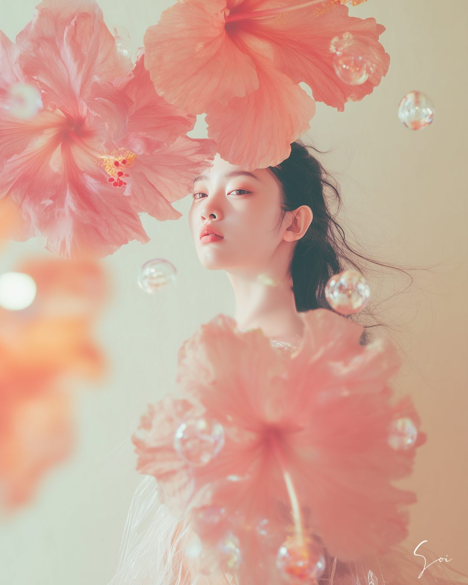
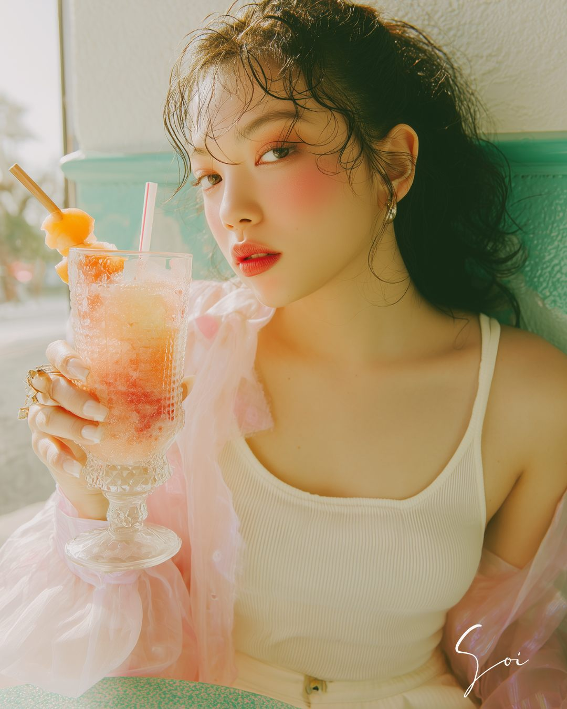
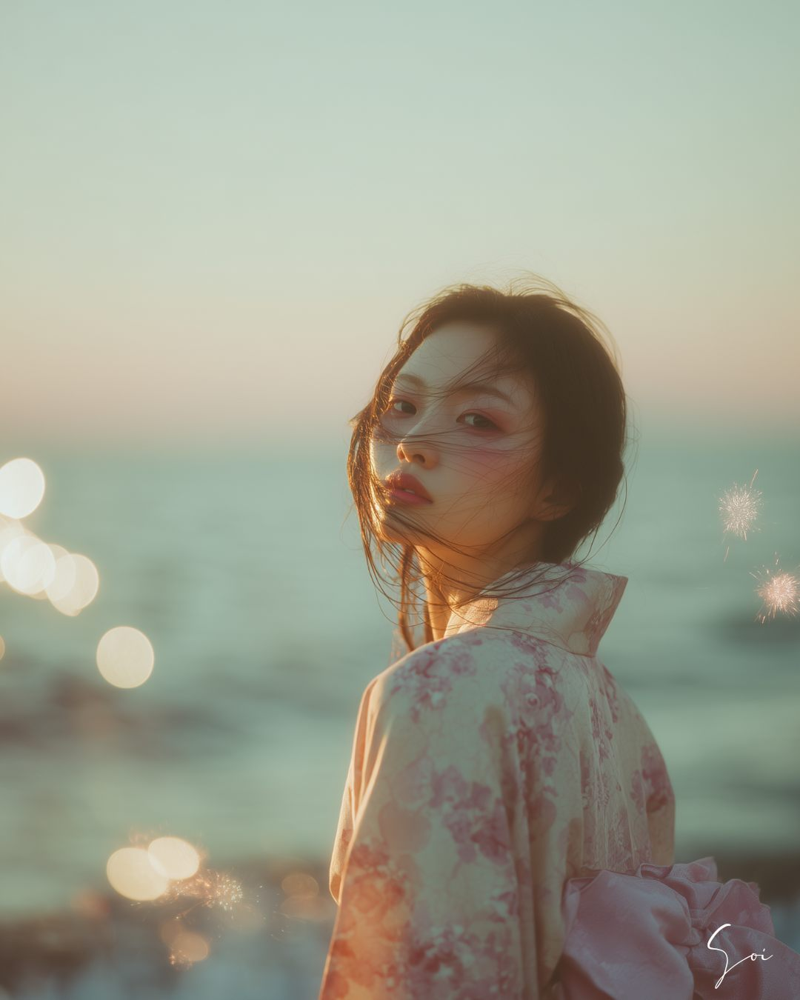
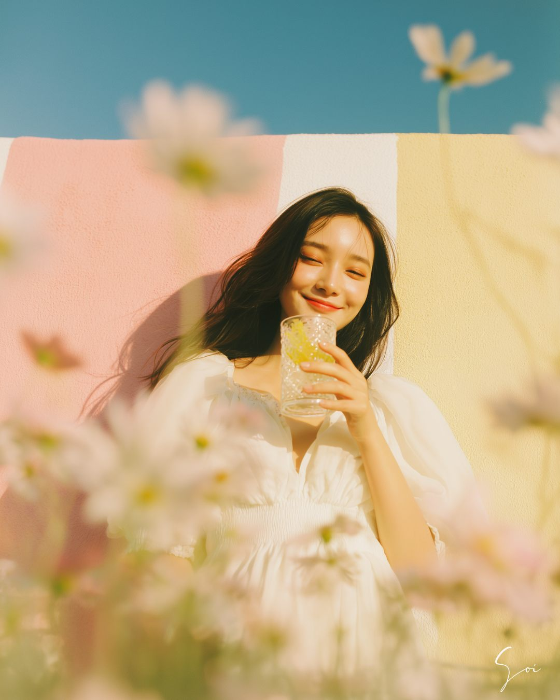

『好き』を言葉にするところから始める、AIアートプロンプトの作り方🌸
¥2,580買い切り／note記事
- 得られるもの
- プロンプトの仕組みの理解。6つの構成要素と、色とモチーフの選び方が分かります。
- ゴール
- 「プロンプトって、こういうものか」が腑に落ちている状態。
- 位置づけ
- 基礎の教科書。一度学べば、理解はずっと残ります。
Feelings
My Story

わたしは専業主婦で、正直、スクールに通うようなお金の余裕はありませんでした。
だから、全部独学で学びました。人より遠回りしたし、時間もかかりました。
でも、遠回りしたからこそ、どこでつまずくのか、痛いほど分かります。 最初に何が「呪文」に見えて、どこで手が止まってしまうのか。
だから ①② は、そのつまずきをまるごと飛ばせるように、 気軽に手に取れる価格で作りました。遠回りした分を、ぎゅっと詰め込んでいます。
センスも、英語力も、必要ありません。
必要なのは、あなたの“好き”だけです。
Your Future




こんな世界観も、色とモチーフの選び方から生まれています。
これは、遠い未来の話じゃありません。
①②を使えば、今日から作れるようになることです🌸
Real Examples
これは、あくまでわたし自身の実例です。専業主婦から独学で始めたAIアートが、 少しずつ、こんな形につながっていきました。
最初から、こうなると分かっていたわけじゃありません。
“好き”を言葉にして、形にし続けてきた結果です。
But…
そのお悩み、①②で解決できます。
2 Steps
¥2,580買い切り／note記事
¥3,980買い切り／GPTsツール
①でプロンプトの仕組みを理解してから、②で実際に作り続けられるようになる。 この2つで、あなたのAIアートは完成します🌸
Voice
そいさんの人柄が、文章にとても表れていて…すごく丁寧で、わかりやすいnoteでした。
これからAIアート、楽しめそうです。ありがとうございました☺️💛
想像の何倍も素敵で、驚きました。
そいさんの想いが、ぎゅっと詰まっているのが伝わってきました✨
たくさん勉強されてきたことが伝わる、質問や言葉選び。
思いが詰まっていて…感謝です🙏💗
自分の“好き”や“こういう画像を作りたい”を、豊富な選択肢を出しながら導いてくれる感じが、本当に素敵です🎶
そいさんの想いと苦労が凝縮されていて、感動しました🥹
FAQ
①の特典としてお渡しするGPTsは、無料版でもお使いいただけます。 ②のツールは、より快適にお使いいただくためにChatGPT Plus（有料版）を推奨しています。 まずは①から、無料で試していただくこともできます🌸
大丈夫です。ここで大切なのは、上手に描く力ではなく「なんか好き」という感覚だけ。 好きな色と好きなモチーフを選ぶところから、ゆっくり始められます。
はい、日本語だけで大丈夫です。プロンプトは「呪文」ではなく、 あなたの“好き”を言葉にしたもの。①で、その仕組みをやさしくお伝えします。
①は、プロンプトの仕組みを理解するところまでの教科書です。 「こういうものか」が分かるようになります。 そのうえで、実際に自分の世界観を自在に作り続けられるようになるには、②もあわせてどうぞ。 ①→②で、理解から実践までがひとつながりになります🌸
Start
①でプロンプトを理解し、②で作り続けられるようになる。 どちらも買い切りなので、あなたのペースで進められます。
色とモチーフが決まれば、世界観は作れます。
そして、その世界観を発信としてどう育てていくか——
その先の話も、また少しずつお伝えしていく予定です🌸
そして近々、AIアートの本当のはじめの一歩から、 気軽な価格で二人三脚でサポートしていくサービスも、募集を始める予定です。 詳しくは、また改めてお知らせします🌸